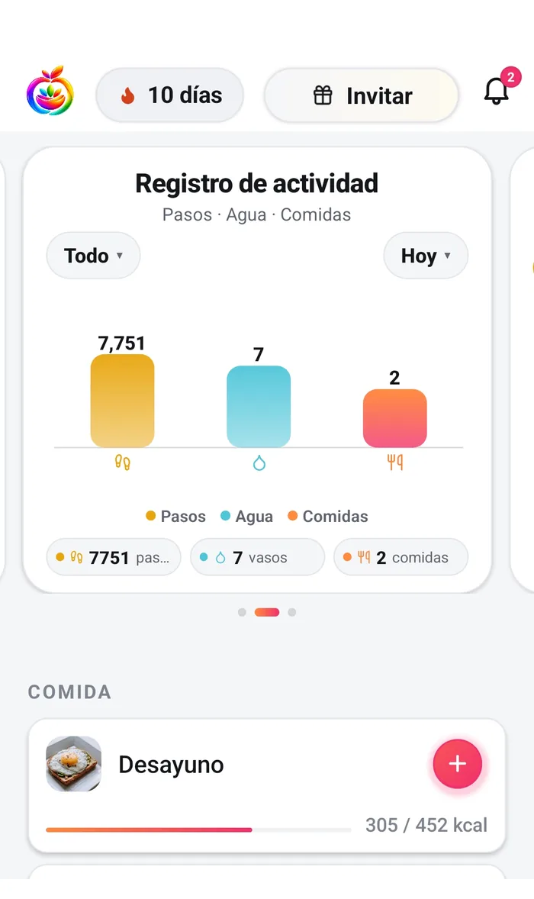
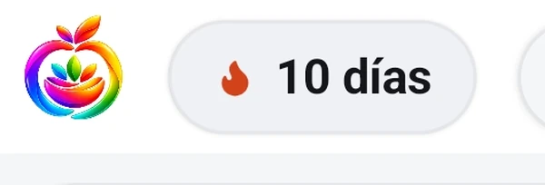
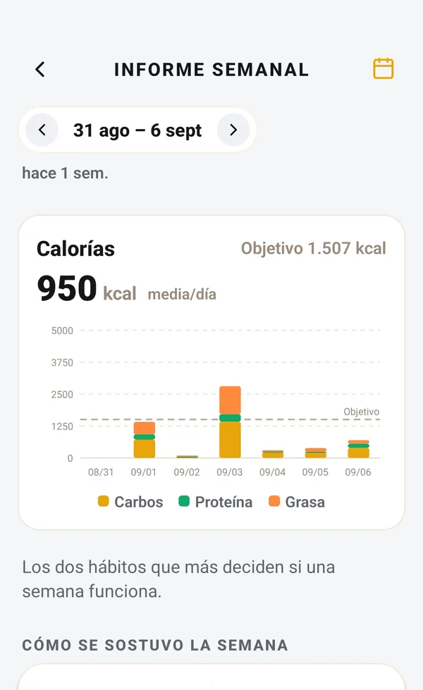

Hábitos que sobreviven a una mala semana.
Lo difícil de comer bien no es saber qué hacer. Es retomarlo después de la semana que se te fue de las manos. Fotocal cuenta los días que registras y marca los hábitos que tú marcas, y está hecho para que saltarte algunos no te cueste nada.


Si te saltas un día, la app dice que tu racha se pausó.
Registra una comida y el día cuenta. Sáltate uno y no se pone nada en rojo, no se desactiva nada y la palabra «perdida» no aparece. Lo que dice la pantalla es que tu racha se pausó y que hoy es un nuevo comienzo, al lado de tu mejor marca, que se guarda.
- Un protector cubre solo un día perdido. Ganas uno en cada hito y puedes tener tres a la vez.
- Si una racha termina, registrar dos días seguidos la devuelve donde estaba, no a uno.
- Tu racha más larga se guarda y se enseña haga lo que haga la actual.
- No hay penalización, no se pierde progreso y no hay nada que recomprar. El diario no se toca en ningún caso.
Lo que dice el día que te saltas.
No es paráfrasis nuestra. Son las frases que hay en la app, y son la razón por la que esta página puede prometer lo que promete.
Tu racha se pausó. Hoy es un nuevo comienzo.
Tu racha de 12 días terminó — saltarte un día no borra tu progreso. Tu mejor marca sigue siendo 30 días, y Hoy puede empezar la siguiente.
Ayer quedó vacío — registra hoy y un protector lo cubre.
Registra una comida hoy y mañana y recuperas tu racha donde estaba.
Los números del segundo son un ejemplo; la app pone los tuyos.

Once para elegir. Siete se marcan solos.
Eliges los que te importan al configurar y puedes cambiarlos después. La mayoría los ve la app por su cuenta a partir de lo que ya has registrado, así que se marcan sin que toques nada.
Los siete primeros se rellenan solos con tu agua, tus comidas y tus pasos. Los cuatro últimos los marcas tú o los dejas.
Un sitio donde apuntarlo, y nada más que eso.
Puedes añadir una nota a cualquier día y etiquetarla de una lista de cincuenta: estados de ánimo, síntomas y los hechos corrientes de una semana. Es un registro que llevas para ti.
Siendo claros con los límites: nada te devuelve estas notas leídas. La app no conecta un estado de ánimo con una comida, no busca patrones entre ellas y no se las pasa a Coach Kal. Se quedan en una lista que puedes recorrer, de más reciente a más antigua. Si una página te dice que una app va a revelarte cómo se conectan tus sentimientos y tu comida, está describiendo algo que esta no hace.
Nada de esto es una nota sobre ti.
- Una racha rota es un hueco en un registro. No es fuerza de voluntad, ni disciplina, ni carácter, y la app está hecha para no dar a entender lo contrario.
- Registrar cada día mide con qué frecuencia abriste una app. Hay mucha gente que come bien y registra mal.
- Aquí la comida no es un premio ni un castigo, y nada de lo que comes se gana ni se debe. Una comida es una comida.
- Si contar empieza a hacerte sentir peor en vez de mejor informado, lo que toca es dejar de contar, no contar más.
Si la comida o tu ánimo se te están haciendo cuesta arriba, habla con alguien
Fotocal no es un producto sanitario y no es apoyo de salud mental. Algunas de las cosas con las que puedes etiquetar un día — un atracón, un ánimo bajo — hay que contárselas a un médico y no a una app, y la app no las va a notar ni te va a responder. Si lo estás pasando mal con la comida, con el comer o con cómo te sientes, habla con un médico, con un dietista-nutricionista o con un profesional de salud mental. Una app de seguimiento es la herramienta equivocada para eso, y dejarla una temporada es algo razonable.

Una semana es una unidad más justa que un día.
Un día suelto no te dice casi nada. El informe semanal junta siete y se abre en el plan gratuito. Dos tarjetas de dentro necesitan Premium: la tabla nutricional completa y la de vitaminas y minerales.
- Coach Kal es gratis en todos los planes, sin límite de mensajes, por si quieres preguntarle algo después de una semana que fue mal
- Los días que no registraste salen como huecos y no como ceros, porque la app no sabe qué comiste
- Los recordatorios los pones tú: eliges las horas, a diario o en los días que quieras, y se repiten
Preguntas sobre rachas y hábitos
¿Qué pasa si me salto un día?
Si tienes un protector, cubre el día y la racha sigue. Si no, la cuenta vuelve a cero y la pantalla dice que tu racha se pausó y que hoy es un nuevo comienzo. Tu mejor marca se guarda. Registra dos días seguidos y la racha antigua vuelve con su longitud entera, no empieza otra vez en uno. No cambia nada más en la app, y tu diario queda intacto.
¿El diario de ánimo me dice algo?
No, y preferimos decirlo. Guarda lo que escribes y las etiquetas que eliges, y te lo devuelve como una lista por fechas. No cruza estados de ánimo con comidas, no busca patrones y no se los pasa a Coach Kal. Sirve como diario, que ya es algo, pero no te va a entregar una conclusión.
¿Puedo desactivar la racha?
Hoy no, y es razonable quererlo. Es una píldora pequeña en la esquina de la pantalla de inicio con una llama y un número, y no aparece en ningún otro sitio ni te manda nada por su cuenta. Si las rachas no te sientan bien, esa píldora es el único sitio donde te la vas a encontrar.
¿Los hábitos me dan la lata?
No. Siete de los once se marcan solos con lo que ya has registrado, y la app nunca desmarca uno una vez hecho el día. Las únicas notificaciones que recibes son recordatorios que pones tú, a las horas que elijas.
Sigue leyendo
Respuestas más largas de las que cabe en una página de función, escritas por personas y no por una app.
Empieza hoy. Sáltate el jueves. Vuelve el viernes.
Fotocal se empieza gratis, con 5 días de prueba en el plan anual.
Descárgala gratis En Google Play · Android